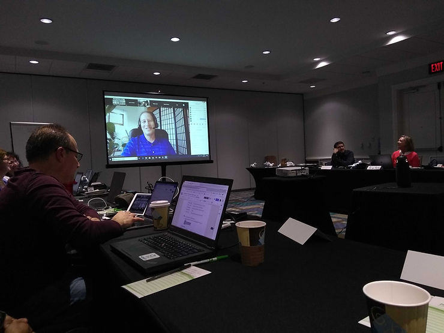

Sakai Campfire Stories: WHOO attended Camp this year?
Feb 14, 2019
1 min read
For Sakai Camp 2019, we decided to do something a little different with regard to remote attendees. We know that not everyone is able to travel to Florida in January to meet in person, and we wanted to make things more inclusive for our worldwide community. So, we invited the Sakai Community at large to drop in during specific times when we planned to “broadcast” our meeting via Zoom. This gave virtual attendees an opportunity to pop in and get a brief window into Sakai Camp.
Several folks joined us online and participated in the discussion. We even hooked up a super cool new gadget called the Meeting Owl (360o camera with speaker and mic) to enhance the virtual experience. The Meeting Owl was a hit. (A few of the campers even proposed that our Owl needs a name. Hedwig, perhaps?) Remote attendees got a panoramic view of the meeting room, and those of us there in person got to see and hear the virtual folks through the speaker and projector. It was almost like they were in the room with us!
As a special bonus, we even had a guest appearance by Neal Caidin, former Sakai Community Coordinator, who dropped in to say hello during our virtual attendee time at the end of day 1.

Since our blended meeting format, and our Meeting Owl, worked out so well, we will definitely do it again next year!